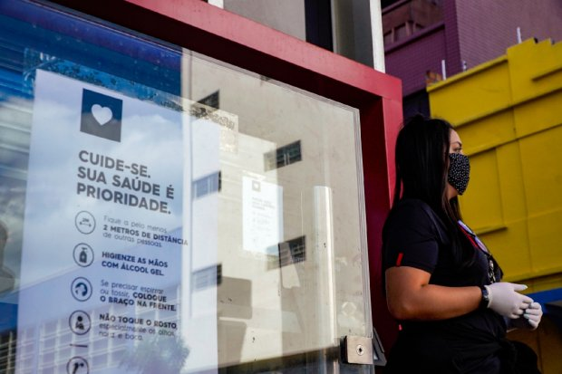
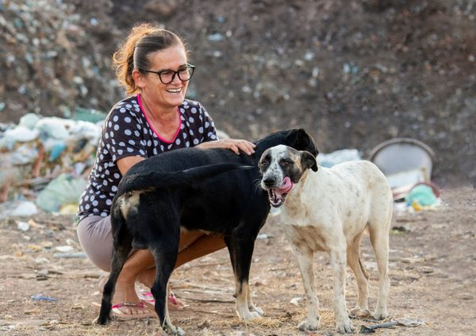
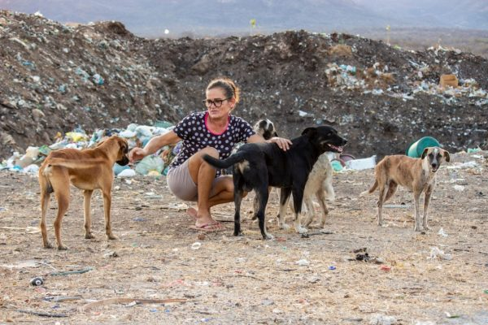
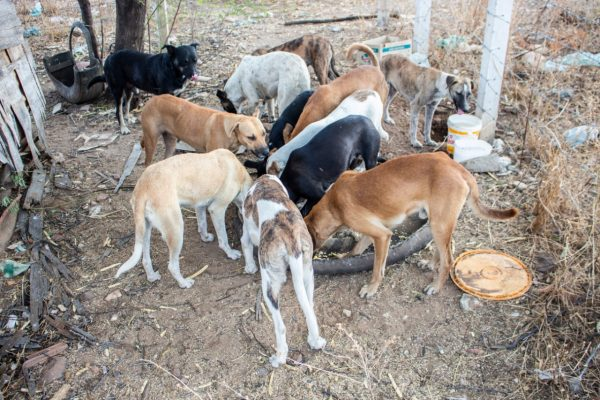
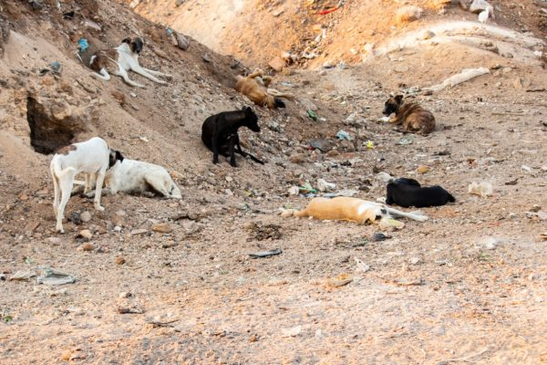

Mulher visita lixão todos os dias para alimentar 40 cães e gatos abandonados
Fonte: Razões para Acreditar

A dona Margareth Medeiros, de 49 anos, é daquelas pessoas que enchem nosso coração de esperança de uma sociedade melhor e mais
generosa. Ela vai, todos os dias, visitar um lixão que tem Ipueira, interior do Rio Grande do Norte, para levar água e comida para 40 cães e gatos abandonados que
vivem no local.
E ela chama todos de filhos!

Quando perguntam para dona Margareth o motivo dessa boa ação, ela diz que é por amor e compaixão aos animais.
E gente, ela tira tudo do próprio bolso. Dona Margareth compra a comida dos cães e gatos com um trabalho que faz para a igreja da
cidade. Ela arruma o local, lava e engoma as roupas para as pessoas. O dinheiro é gasto com ração e vacinas.

Acácio, filho de dona Margareth, também ajuda a mãe com alguns custos e visitas ao lixão. “Eu ajudo comprando ração, cuscuz e arroz,
para ela fazer a mistura e dou R$ 50 por mês […] Até há pouco tempo ela nunca tinha recebido ajuda”, revelou o rapaz.
As visitas são feitas diariamente há dois anos e quando ela chega no lixão, é uma alegria só!
Dona Margareth, como toda boa mãe, batizou cada um dos animais que vive no lixão. E eles atendem!

O tempo que dona Margareth fica no lixão, ela não está só. Há sempre um cão ou gatinho por perto, buscando carinho e atenção. Além da
alimentação, ela dá muito amor para eles.
Apesar de não reclamar nunca da sua rotina, dona Margareth não esconde a sua vontade de aparecer alguém para adotar os animais do
lixão. Ela entende que estando em um lar, os bichinhos estarão muito mais bem cuidados e seguros.

Acácio contou que dona Margareth também cria 5 cachorros e 3 gatos, na casa dela.
“Ela é um anjo que cuida dos animais abandonados […] e decidiu que sua vida seria dedicada aos cuidados e proteção dos inocentes”,
concluiu o filho.
Veja Mais+
Inscrições abertas para curso técnico em Manutenção e Suporte em Informática
O Câmpus Canoinhas tem 40 vagas para o curso técnico concomitante em Manutenção e Suporte em Informática.